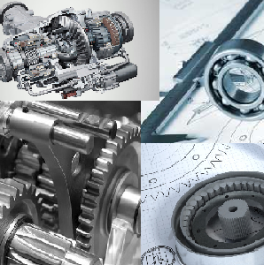

Відділення

Денне відділення комп’ютерних технологій
Денне відділення комп’ютерних технологій об’єднує студентів, які навчаються за
спеціальностями 151 “Автоматизація та комп’ютерно інтегровані технології ” та 121 “Інженерія
програмного забезпечення”.
На відділенні навчається 323 студентів. Студенти, які навчаються за спеціальністю 121«Інженерія програмного забезпечення» отримують кваліфікацію: технік-програміст. За час навчання мають змогу опанувати мови програмування, сучасні системи автоматизованої обробки інформації, технології розробки програмного забезпечення та побудови комп’ютерних мереж, комп’ютерну графіку, Web програмування.
На відділенні навчається 323 студентів. Студенти, які навчаються за спеціальністю 121«Інженерія програмного забезпечення» отримують кваліфікацію: технік-програміст. За час навчання мають змогу опанувати мови програмування, сучасні системи автоматизованої обробки інформації, технології розробки програмного забезпечення та побудови комп’ютерних мереж, комп’ютерну графіку, Web програмування.

Денне механіко-технологічне відділення
Спеціальність заснована у 1968 році. На цій спеціальності готують спеціалістів ремонтної
служби середньої ланки. Випускники коледжу працюють на посадах майстрів, старших майстрів,
технологів та конструкторів ремонтної служби підприємств. Протягом існування спеціальності
диплом техніка-механіка отримали 4547 осіб. Знання та практичні навички, які набувають
студенти протягом навчання в коледжі, дозволяють працювати випускникам у сфері сервісного
обслуговування побутової техніки, автомобілів, сільськогосподарської техніки, а також
менеджерами салонів з продажу різноманітної техніки.
Денне економічне відділення
Економічне відділення було відкрито в 1999 році. За роки свого існування на відділення було
випущено більше 3 500 спеціалістів за спеціальностями:
- «Бухгалтерський облік»
- «Облік і оподаткування»
- «Економіка підприємств
- «Облік і оподаткування»
- «Економіка»
- «Комерційна діяльність»
- «Підприємництво,торгівля та біржова діяльність»